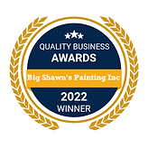
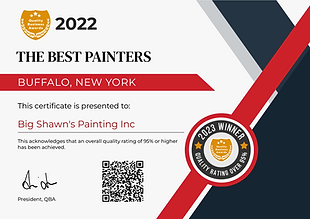
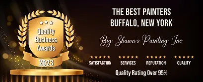

LEARN ABOUT OUR BUSINESS
After completing a seemingly infinite number of residential, commercial, interior, and exterior painting jobs, what we've learned is that what matters most is value and doing a quality job at an affordable and fair price. Approaching every project with the same uncompromising level of care, attention, and professionalism.
My father and I opened the company back in 2007. In 2014 unfortunately my father passed away. So, I decided to name the company after my father Shawn McCluskey. Hence the name Big Shawn's Painting. Great guy, people loved him, he loved people. A great painter, he taught me everything I know. Since I was 16, I have been in the painting field. I'm going on over 25 years' experience and 14 years of running a company. We know how to overcome obstacles and get the job done right. We take great pride in what we do. Give us a call to schedule your free estimate.
Big Shawn's Custom Painting has always operated under strong values aimed at exceeding client needs. Our communication channels are always open—our relationship with our clients begins on the first day of contact and only ends once they’re fully satisfied with our work.
When you hire our services, you can count on us for the results you want and need. Get in touch today and discover the advantage of working with Big Shawn's Painting.
Our Achievements
  Finished Projects
Living Room Transformation
Our team transformed this outdated living room with a fresh coat of paint and new decor. The new color scheme brightened up the space and made it feel more modern and inviting.
Exterior Painting
The exterior of this house was in need of a fresh coat of paint. The old paint was peeling and chipping, making the house look tired and unkempt. After painting, the house now has a fresh and modern look.
Outstanding Work!
by Jane Doe
Big Shawn's Custom Painting provided outstanding service from start to finish. The attention to detail and quality of workmanship exceeded my expectations. I highly recommend them for any painting project!
Professional and Reliable
by Robert Smith
I hired Big Shawn's for an exterior painting project, and the results were fantastic. The team was professional, reliable, and completed the job within the agreed timeline. I'm very satisfied with their services!
Great Communication
by Sarah Johnson
I appreciate the excellent communication from Big Shawn's Custom Painting. They kept me informed throughout the entire painting process, and the results were fantastic. Highly recommended!
Reliable and Trustworthy
by Michael Smith
Big Shawn's Custom Painting is a reliable and trustworthy painting company. They completed our project on time and exceeded our expectations. Will definitely use their services again!
Quick and Efficient
by John Anderson
I hired Big Shawn's for a commercial painting project, and they were quick and efficient. The team worked diligently, and the quality of their work was outstanding. I'm very pleased with the results!
Beautiful Interior Painting
by Lisa Martinez
Big Shawn's Custom Painting transformed the interior of our home with beautiful paintwork. The attention to detail and color suggestions were fantastic. I'm extremely satisfied with their service!
Services Offered
Commercial Painting
Big Shawn's Custom Painting offers efficient interior and exterior commercial painting for offices, restaurants, retail spaces, apartments, hotels, banks, and more, minimizing downtime for a seamless process.
Interior House Painting
Big Shawn's Custom Painting is the color theory experts and will help you decide what color pallets are best for your interior home. We serve our clients with high-quality paint that is safe for the environment.
Exterior House Painting
Big Shawn's Custom Painting, your trusted exterior painting contractors, will assess your home's age, discuss color preferences, establish a painting timeline, and ensure complete satisfaction for your upcoming project.
Popcorn Ceiling Removal
At Big Shawn's, we excel in removing any popcorn ceiling texture. Whether it's asbestos concerns in pre-1980 homes, aesthetic dislikes, or irritation from falling particles, we're your top choice for a reliable drywall contractor.
Wallpaper Removal
If you're considering changing your wallpaper or repainting, dealing with the precision and tedious task of peeling off wallpaper can be time-consuming and risky. DIY removal might lead to wall damage, especially if you're in a hurry.
Frequently Asked Questions
How should I prepare for a painting project?
Prior to our arrival, it's helpful to clear the working areas of any valuable or fragile items. We can provide specific instructions during the pre-project consultation to ensure a smooth and efficient painting process.
How long have you been in business?
Big Shawn's Custom Painting has been in business since 2007, and we have over 25 years of painting experience.
How long does a typical painting project take?
The duration of a painting project can vary based on the size and scope of the job. We strive to complete projects efficiently while ensuring the highest quality. During the estimate, we'll provide you with a timeline for your specific project.
Contact Us
Phone: (716) 272-0319
Email: info@bigshawns.net